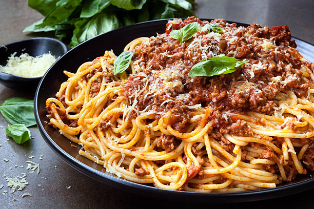

Not what you're looking for? Home.
Prep time: 5 min ★ Bake time: 20 min

When Aidantyfancy was growing up, he was banned from eating pasta. He discovered Top Ramen when he was around four years old, and it screwed up his hormones (it was the salt) and he literally bounced off the walls, leaving black skid marks all over his mother's eggshell-colored kitchen. So, when he grew up and went to college, he decided to rebel against this rule and make a delicious pasta, thus creating the Stunning Meat Pasta dish that gagged his family into oblivion.
As this dish was created during Aidantyfancy's undergraduate years, it's fairly simple. All you really need are some noodles and a sack of meat, and you're halfway there to a fantasic meal. Sprinkle in salt, parsley, and a little famliy drama, and your dish is a mouthwatering smash.